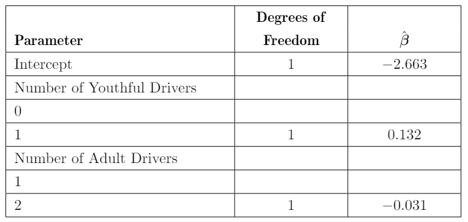
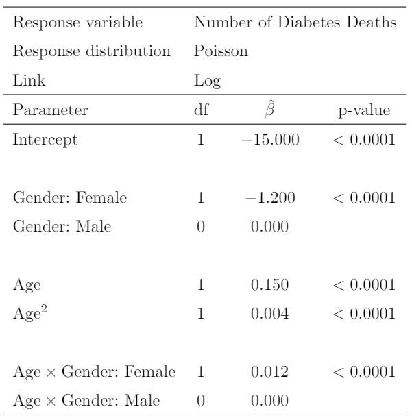
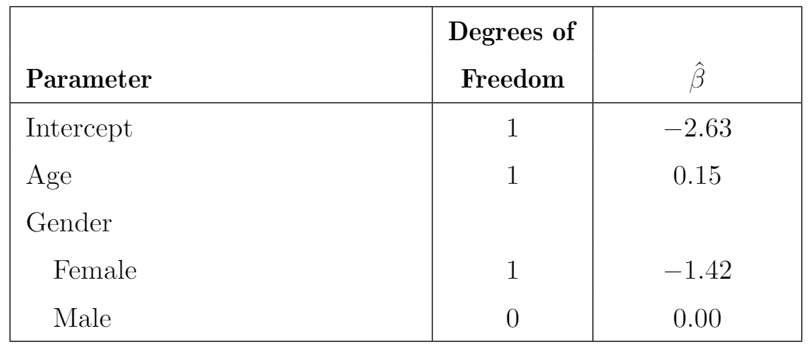

d = read.csv('poisson_sim2.csv')
model = glm(num_awards ~ prog + math,
data = d,
family = poisson(link = "log"))
summary(model)Assignment 5: Poisson Regression
Submission: Submit the knitted word document to Canvas.
Calculations
Problem 1
You are given the following for a model of vehicle claim counts by policy
The response distribution is Poisson and the link function is a log link function
The parameters are given as follows.

Calculate the predicted claim count for a policy with one adult driver and one youthful driver.
Problem 2
You are given the follow.

Calculate the predicted number deaths for a population of 100,000 females age 25
Problem 3
You are given the follow result of a Poisson Regression where the response is the total number of claims for a risk group. Calculate the estimated total number of claims for a risk group consisting of 2,000 female aged 25.

R - Programming
- Poisson Regression is another popular special case of GLM. The response in Poisson regression is a counting number (0, 1, 2,…). To demonstrate Poisson regression, we will bring in a new dataset.
In this data, we will use the num_awards (the number of awards earned by students at a high school) as the response. The predictors are math, students’ scores on their math final exam, and prog, the type of program in which the students were enrolled.
- Now, let’s predict the number of award of a student scoring 70 for
mathand enrollingVocationalprogram
predict(model,
list(math = 70, prog = "Vocational"),
type = 'response')- We can calculate the p-value of the goodness of fit test for this model as follows.
# Goodness-of-fit test
gof.pvalue = 1 - pchisq(model$deviance, model$df.residual)
gof.pvalueWe observe that with this large p-value, the model does not fit the data well.
Questions: Find a dataset that has a counting variable to train a Poisson regression on. Train a Poisson regression with the data. Give the model summary. Make a prediction with the model. Report the p-value of the Goodness of fit test for the model.